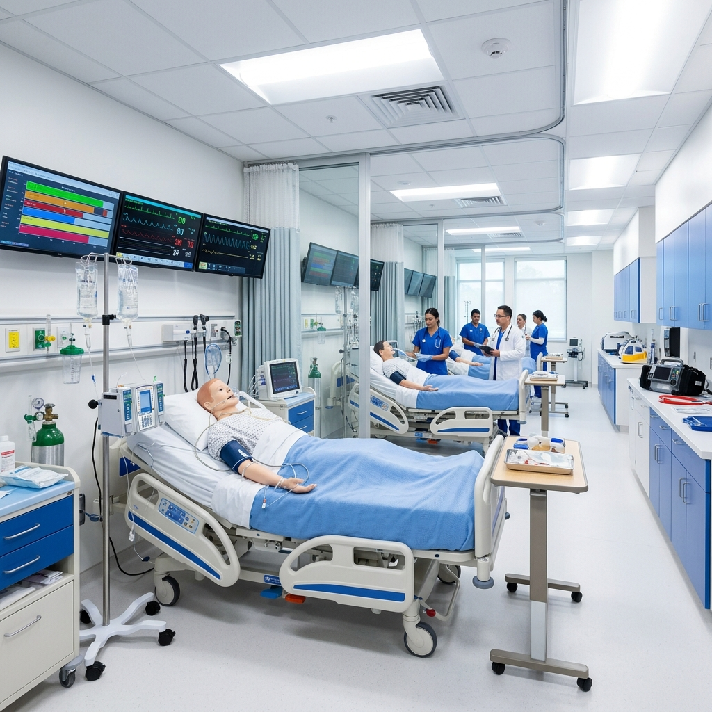
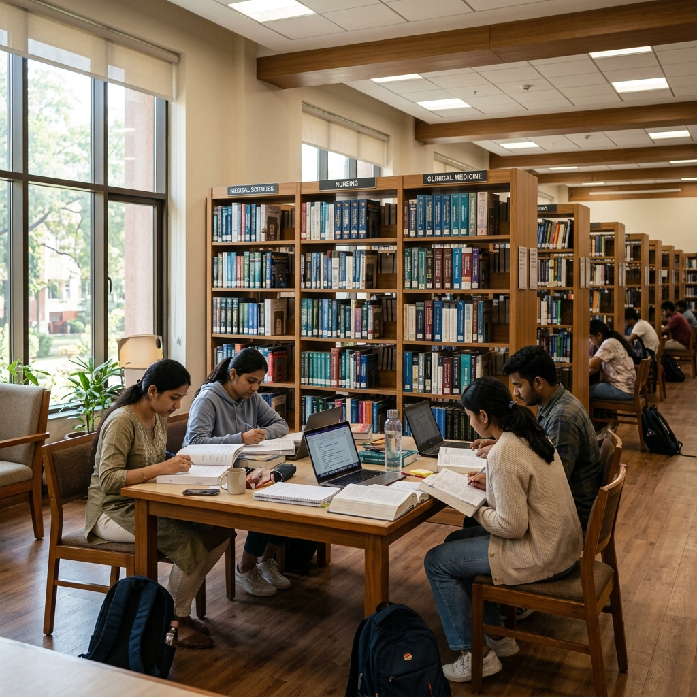
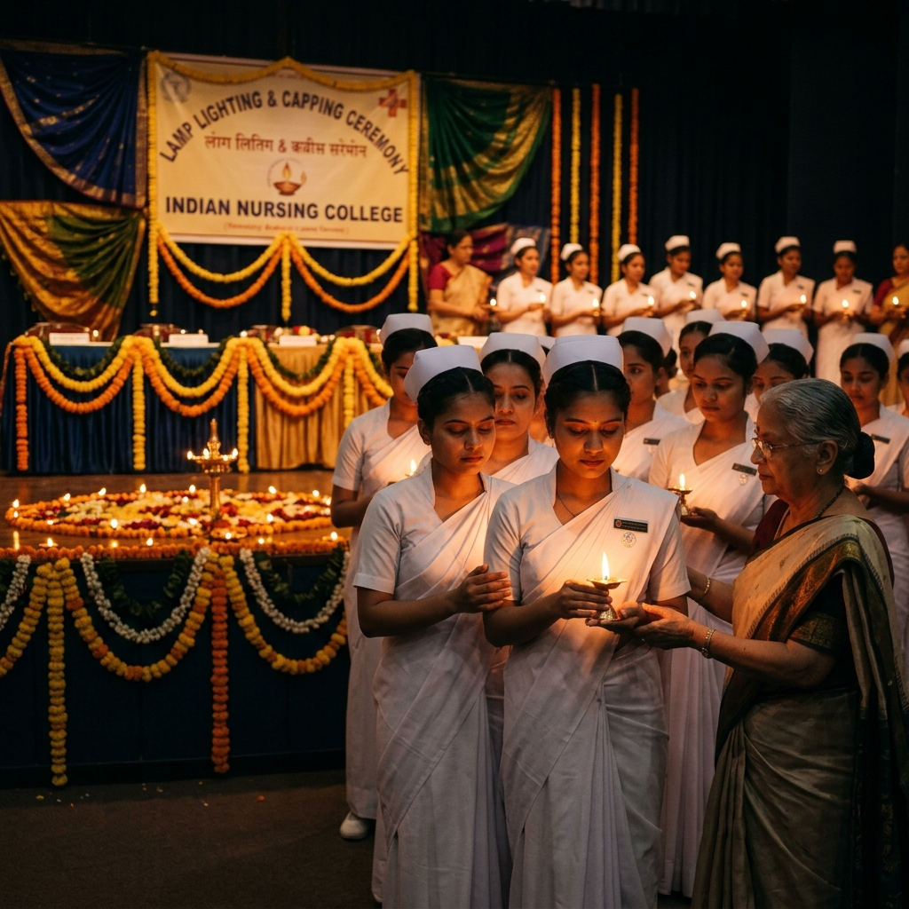
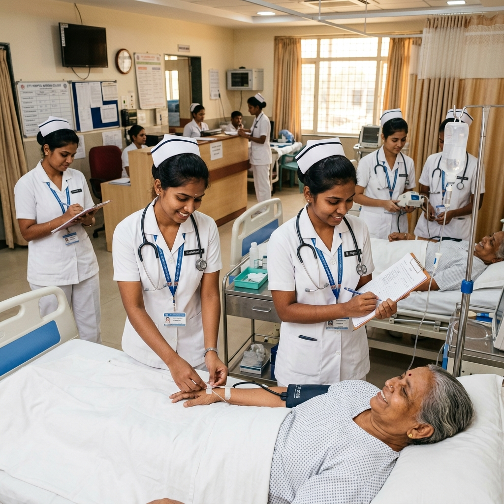
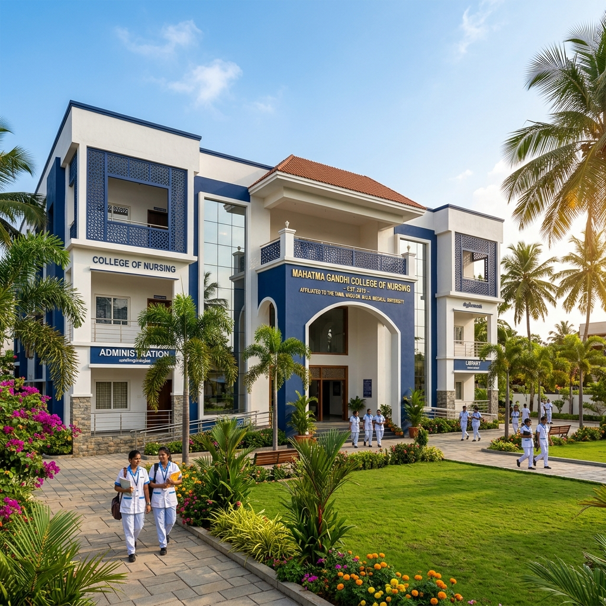

Our Facilities
State-of-the-art infrastructure designed for comprehensive nursing education
Our campus is equipped with modern facilities that ensure students receive the best practical and theoretical education in nursing sciences.

Nursing Simulation Laboratory
Our simulation lab is equipped with advanced patient mannequins, hospital beds, IV training arms, cardiac monitors, and emergency resuscitation equipment. Students practice procedures in a safe, controlled environment that mirrors real clinical settings before working with actual patients.

Library & Reading Room
Our well-stocked library houses over 5,000 textbooks, reference materials, journals, and periodicals covering all aspects of nursing science. The spacious reading room provides a quiet, air-conditioned environment for study and research, with access to digital resources and online journals.

Computer Laboratory
A modern computer lab with 30+ workstations, high-speed internet connectivity, and the latest software for medical research, documentation practice, and online learning. Students learn healthcare informatics, electronic medical records, and digital literacy skills essential for modern nursing practice.

Hostel & Accommodation
Separate, secure hostel facilities for students with well-furnished rooms, 24/7 water and electricity supply, Wi-Fi connectivity, common rooms for recreation, and dedicated warden supervision. The hostel provides a safe, comfortable living environment conducive to academic focus.

Cafeteria & Dining
A spacious, hygienic cafeteria serving nutritious vegetarian and non-vegetarian meals prepared under strict quality standards. The mess facility provides breakfast, lunch, evening snacks, and dinner. Special dietary requirements are accommodated upon request.

Sports & Recreation
We believe in holistic development. Our campus features outdoor courts for badminton and volleyball, indoor games like table tennis and chess, and open spaces for yoga and morning exercises. Annual sports meets and inter-college tournaments keep students physically active and competitive.

Transportation
Dedicated college buses operate on multiple routes covering Bhanjanagar town and surrounding areas. Transport facilities are also provided for clinical postings at affiliated hospitals and community health centres, ensuring safe and timely travel for all students.

Auditorium & Seminar Hall
A well-equipped auditorium with seating capacity for 200+ serves as the venue for academic seminars, guest lectures, workshops, cultural programs, and ceremonial events including the annual lamp lighting and capping ceremony. Equipped with modern audio-visual systems.